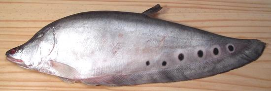

Featherback

[[Clown featherback, Clown knifefish; Pla Grai (Thai); Ca Thac Lac
(Viet); Chitala ornata (Mekong). | also
Chitala chitala (Ganges - disorderly spots) |
also Chitala lopis (Malaysia, Thailand, Indonesia, Borneo -
no spots)]]
Native to the Mekong Basin, this important food fish is thin, with
flesh so tender it's nearly mushy, and so shot full of bones, spines and
fin rays it's nearly impossible to eat whole or as fillets. It is,
however, the preferred fish for fish cakes, fish balls and some kinds of
pickled fish and fish sauce in Thailand and Vietnam. In North America
they are a popular aquarium fish. This fish grows up to 39 inches and
11 pounds but the photo specimen was 17-1/2 inches long and weighed
1 pound 6-1/8 ounces.
More Fish Varieties
(very large page).

Buying:
The large Asian markets in Los Angeles (Alhambra
and San Gabriel) have Featherbacks up to about 19 inches in the frozen
cases, and sometimes larger ones on ice. This fish is difficult and
tedious to prepare, as noted below, but it's essential for some very
popular fish cake recipes, the elastic texture of its flesh is truly
unique.
I highly recommend dealing with this fish the way the local
Vietnamese and Thais do. Dig around in the freezer cases until you find
frozen blocks or small tubs of pre-scraped featherback flesh, then go
directly to your recipe. The block in the photo was purchased from a
large Asian market in San Gabriel, 14 ounces for 2018 US $4.69
(5.36 / pound). For the small tubs, read the label, they may contain
pastes from other fish.
Scaling:
This fish is covered with zillions of tiny scales
that take a bit of energy to scrape off. Since you'll be discarding the
skin you might just scrape them off the top and bottom so you can make
filleting cuts and forget the rest.
Cleaning:
Don't bother - there isn't a lot inside these
fish and what there is is hard to get at, Just cut the head off behind
the gills and pectoral fins and go on to filleting.
Filleting:
Well, you can't, really, the flesh doesn't
hold together well enough. I understand freshly caught fish have somewhat
firmer flesh, but you can't get those around here. Just do the best you
can, you've got to fillet it because the skin is too tough to get at the
flesh any other way.
Scraping:
Using the back side of your prep knife, scrape
all the flesh off both the bones and the skin. Note that it's shot full
of pin bones in some areas. Try to leave all bones and fin rays behind.
When I'm finished scraping I run the flesh through a food mill to
remove anything I missed. Discard everything but the scraped flesh.
Yield:
Two fish totaling 2.8 pounds yielded exactly 1
pound of clear flesh for a yield of 36%.
sf_fbackz 091230 - www.clovegarden.com
©Andrew Grygus - agryg@clovegarden.com - Photos
on this page not otherwise credited © cg1
- Linking to and non-commercial use of this page permitted